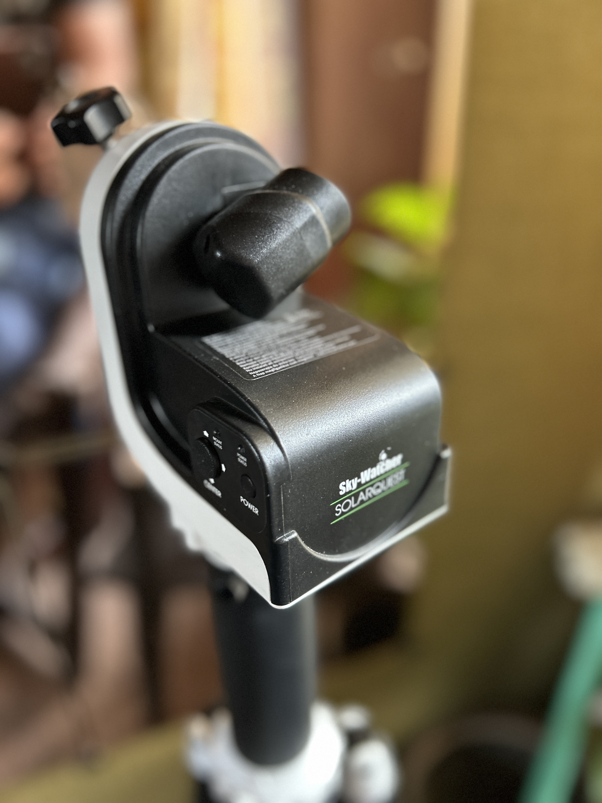

It is a mount of use for solar observing only made by Sky-Watcher. Max payload 5kg. It will manage the LS60MT with H-Alpha filters and Pentax zoom or a ZWO camera when observing / imagine in the H-Alpha light. The set up for white light observing using the Lunt Herschel Wedge (alpha filters removed) is lighter so also no problem.
When powered up it will find the sun and track it: Built in gps tell it position and time, then it know altitude of sun. When altitude of sun establish it hunts for the sun using small tracking scope of the mount.
More below the picture.

This topic is about getting the Solarquest ready for mounting a solar telescope (either a dedicated solar telescope or a general telescope with the needed filters installed to make it save for observing the sum).